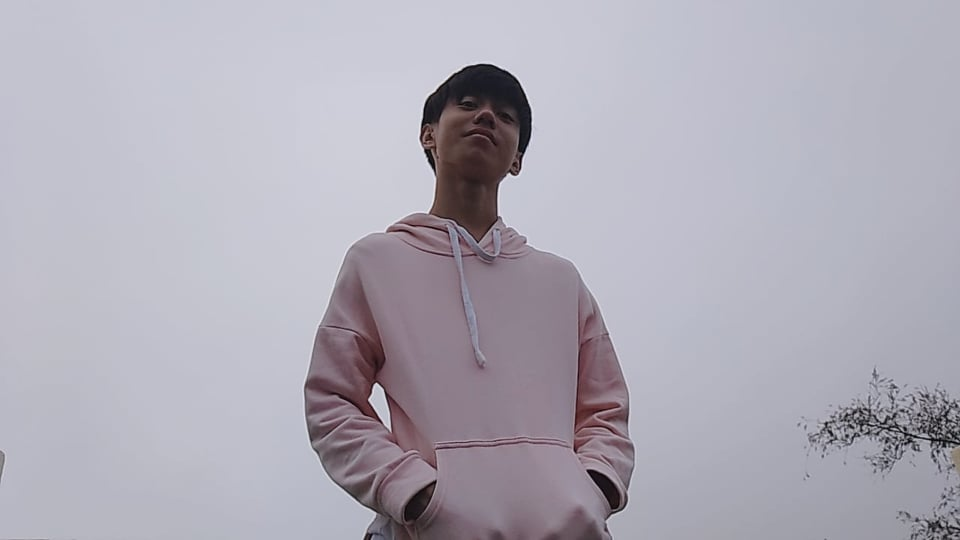
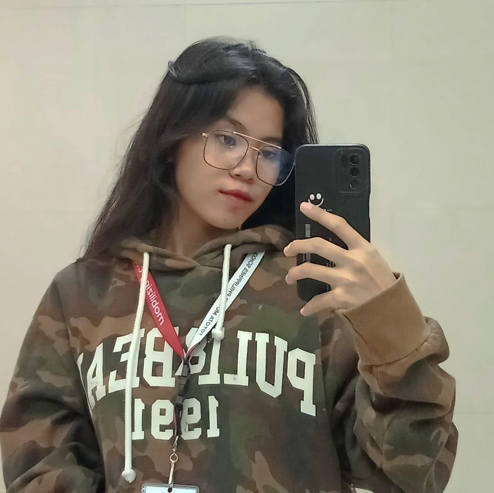
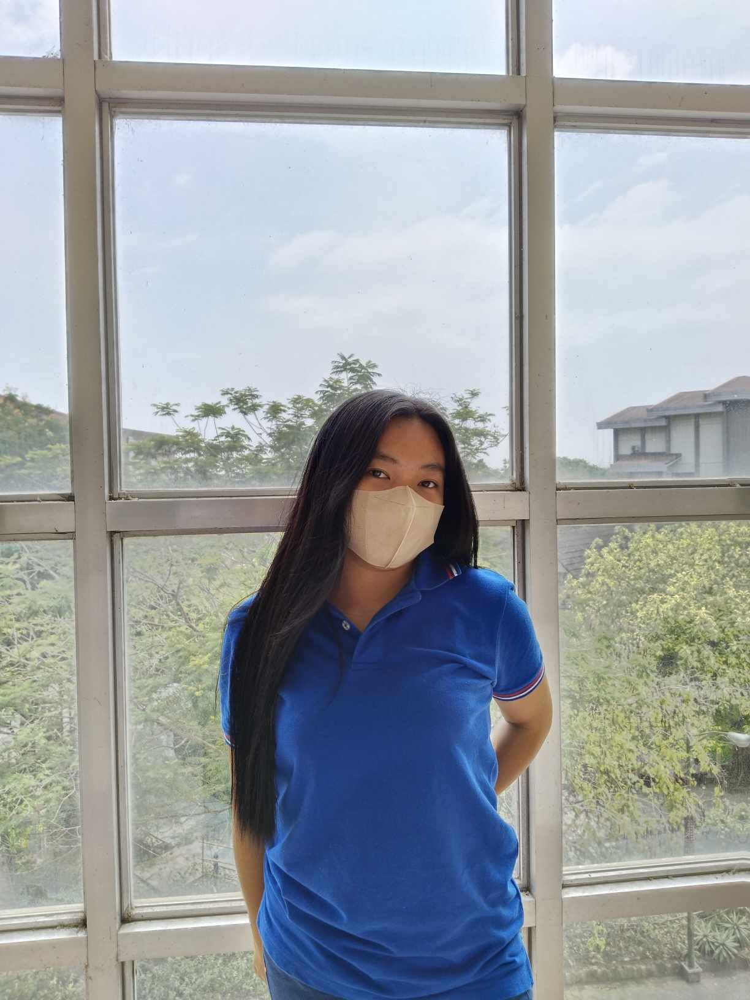
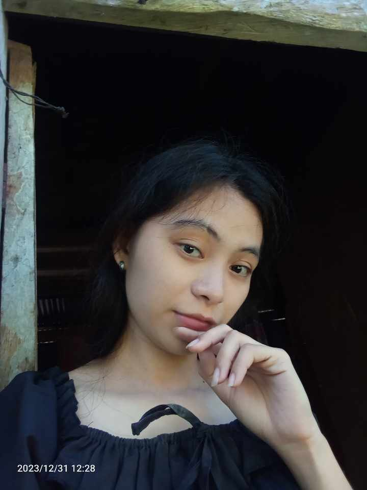
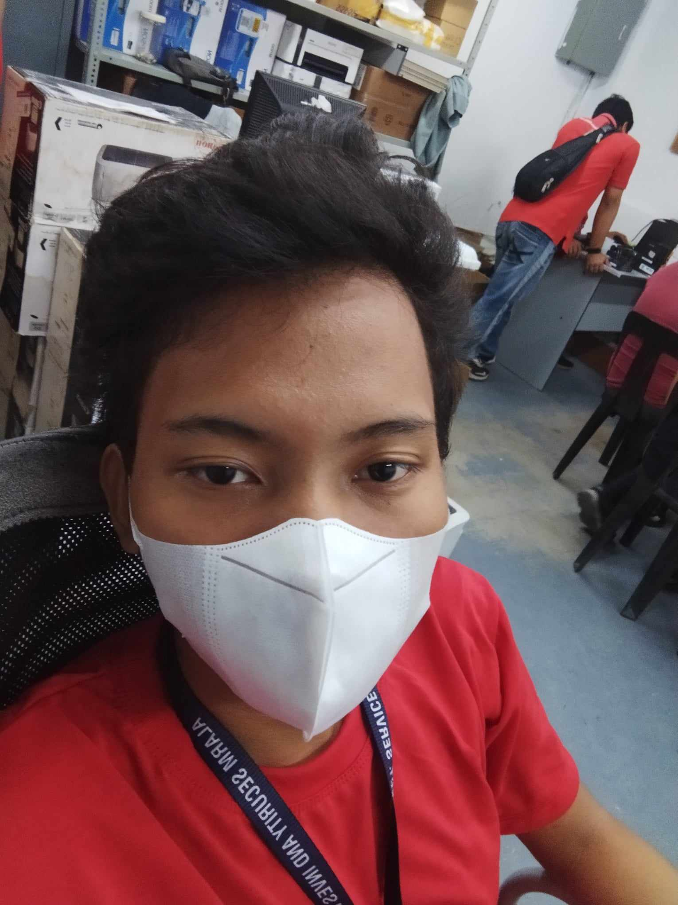

| The Room and Laboratory Cleanliness and Maintenance Reporting System or RLCMRS is an automated tracking system devised to tackle cleanliness and maintenance challenges within PUP Biñan's classrooms and laboratories. This innovative solution enables professors and students to report the state of classrooms after use, generating reports that highlight areas requiring attention. Through accountability, transparency, and efficiency, it aims to instill responsibility among users, streamline maintenance efforts, and prioritize cleaning tasks. | It aims to instill a culture of accountability among professors and students, encouraging responsible behavior regarding classroom maintenance. Through transparent reporting and efficient task prioritization, the system seeks to enhance overall cleanliness standards, ensuring a conducive and hygienic environment for academic activities. Ultimately, its purpose is to promote a seamless learning experience by prioritizing cleanliness and fostering a sense of collective responsibility within the university community. |
|---|
DEVELOPERS

JOSHUA ALEN LOPEZ
WEB DEVELOPER

JESSALYN MACARIOLA
WEB DEVELOPER

KATRINA IBIAS
WEB DEVELOPER

JUDY ANN RAPOSON
WEB DEVELOPER

JOHN ROD TEMPLO
WEB DEVELOPER